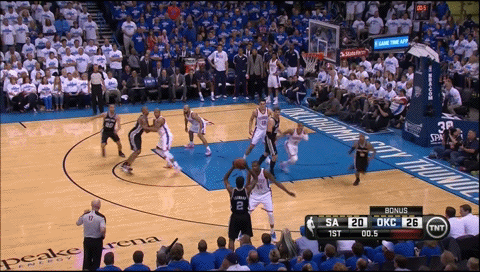

As you can see in thiw two gifs. Hrden's defense is TERRIBLE. If you watcha a lot of basketball, you would know that Harden has one of the worst defensive stance in the game of basketball. Westbrook is hustler on defense and he is always the first one to the ball. He gives his full effort on defense every game compared to Harden who likes to let opponents pass through him with no defense. This is an MVP? Why wouldn't you want someone who could lock up anyone in the league